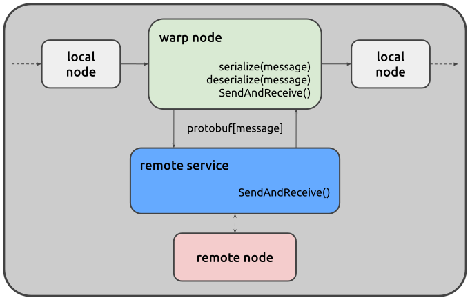

When creating a juturna pipeline, all its components are instantiated locally. Whilst this is ideal when developing new nodes and checking that everything works fine on your own machine or container, in many production scenarios having the ability to leverage remote resources, such as GPUs, is not a plus but a must. For this reason, juturna offers the basic infrastructure to deploy nodes remotely, while still using them as if they were local entities. We call this warping.
Warping a node enables the remote execution of that node, included in a local pipe. You can deploy specific nodes as remote services that communicate with the main pipe over the network using gRPC and Protocol Buffers (Google’s protobuf ).
This architecture allows a local pipe to offload processing to remote node handlers, which manage the node lifecycle and act as message brokers for incoming and outgoing queues.
The warping mechanism addresses common topics in several deployment scenarios. To name a few, remote nodes are deployed with dependency isolation, so they do not clash with conflicting dependencies from other nodes in the same pipeline. Also, sharing and scaling are strong suits of remote nodes, as they can serve multiple pipelines simultaneously, or be made redundant and masked by a load balancer.
Remotisation features might be unstable (1.0.1-beta)
The infrastructure to deploy juturna nodes remotely is still under active development. We do not recommend using it in production scenarios, or for mission-critical components.
When a node is configured for remote execution, two components work together. On the local side (that is, the main juturna process) a node intended for remote deployment is masked by a warp node. A warp node is a simple processing node acting as local client or proxy for the remote node. Warp nodes are responsible for managing the communication with the remote service behind which the concrete node lives. This means, they receive messages from the pipeline normally, turn them into protocol buffers, send them over the remote service, and then unpack the responses they receive.
On the remote side runs the remote service, a standalone gRPC server that holds the concrete node doing the actual computation work, acting as a publish/subscribe broker for its input and output queues. Similarly to the warp node, the remote service manages the marshalling and unmarshalling of the data received from the local pipe.

Juturna installation includes pre-compiled protobuf classes, ready to use out of the box. However, if you need to modify the .proto definitions or recompile them for development purposes, two utility scripts are provided:
juturna/remotizer/compile_protos.sh: Recompiles the .proto files into
Python classes
juturna/remotizer/expose_protos.sh: Exports the compiled protobuf classes
for external use. This requires to install the additional protoletariat
dependency.
These scripts should only be needed when modifying the protocol definitions or contributing to the Warp node implementation.